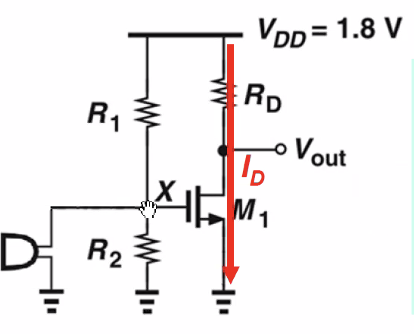

충남대학교 컴퓨터공학과 남병규 교수님의 "전자회로" 강의를 필기한 내용입니다.
이 문서는 보관이 목적이고, 관리되지 않습니다. 따라서 잘못된 정보가 포함되어 있거나 순서가 뒤죽박죽일 수 있습니다.
Biasing
- 트랜지스터가 제대로 작동할 수 있도록 전압을 잡아주는 일
- 전압은 이 아래 두가지의 기능을 잘 수행하도록 잡아줘야됨
- 기능1 : turn on 일단 MOSFET트랜지스터가 켜지도록 해야됨
- 기능2 : saturation 포화상태에서 동작하도록 해야됨
- 여기서 전압을 잡아주는 것은 GND, 즉 DC전압을 적당히 세팅해주는 것을 의미한다
- 즉, DC전압을 적당히 줘서 트랜지스터가 켜져있고 포화상태에 들어가 있는 상태를 만들고 AC신호를 흘려서 증폭의 역할을 하게 하는것
Vgs, Vds Biasing

- VDD와 출력단자 사이에 저항 Rd를 넣어야 VDD의 전압이 바로 출력으로 나가지 않는다 - 이유는 묻지 마셈 - 걍 저기다가 저항을 넣으면 VDD와 출력단자가 분리되는 효과를 준댄다
- gate를 입력 drain을 출력전압으로 보통 사용한댄다 - 그래서 Vgs로 교류전압을 넣어주면 Vds로 증폭된 교류전압이 나오는 구조

- Cut-off구간이나 기울기가 -1이 되기 전까지는 증폭이 일어나지 않는다 - Cut-off구간에서는 아예 DC전압이 출력되고 기울기가 -1보다 크지 않은 지점까지는 DC + AC가 출력되지만 증폭이 되지 않고 오히려 감축된다
- 보면 saturation과 linear의 경계쯤에 있는 놈은 saturation쪽은 경사가 가파른데 linear는 경사가 완만하기 때문에 saturation쪽인 위로 증폭은 잘 되지만 linear쪽인 아래쪽은 증폭이 잘 안되게 된다 - 즉, 왜곡이 일어남
- 따라서 saturation구간에 Vgs를 잡아 제대로 왜곡없이 증폭되게 해야 한다 - 이것을 biasing 이라고 하는 것
- 근데 보면 AC + DC 이기 때문에 고정된 DC를 기준으로 AC가 왔다갔다 하는거라고 보면 된다
- biasing이라는 것은 저 Vgs의 AC + DC 중 DC를 적당히 잡아 saturation의 구간에서 왔다갔다 할 수 있도록 하는 것

- 입력신호를 바로 Vgs로 넣어주면 너무 전압이 낮기 때문에 cutoff구간에서 놀게 된다
- 하지만 그렇다고 VDD를 입력신호랑 합쳐서 넣게 되면 이번에는 너무 커서 linear구간에서 놀게 된다
- 그래서 R1라는 저항을 추가하고 GND를 추가해 전류가 흐르게 해주면 전압강하가 일어나게 된다
- 하지만 R2저항이 없으면 바로 GND와 직결돼 0V가 되므로 R2저항을 추가해 적당히 전압강하가 일어나게 하는 것

- Rs를 추가해 소스의 전압을 올려 Vgs의 전압을 낮춰줘 saturation구간에 포함될 수 있게 해주는 기법도 있는데 이것을 축태, Degredation 이라고 한다
- 위 그림에서
증폭률(A)는 gm * RD이기 때문에 RD를 최대한 올려주는 것이 중요하다.- 근데 Rd를 너무 올리게 되면 Vds가 너무 작아져 Vgs보다도 작아지면 Linear구간에 빠지기 때문에 Linear에 빠지지 않는 선에서 Rd를 정하는 것이 중요하다
- VDD와 Vth는 항상 주어진다
- Vy는 Saturation관계식인
Vy > Vx - Vth로부터 구하고 Id는 트랜지스터 공식으로부터 구한다 - gm구하는 공식 외워놔야된다 -
gm 비례 W / L를 이용해 gm을 구함 - 기호를 봤을 때 화살표가 흘러들어오는 방향이면 PMOS, 흘러나가는 방향이면 NMOS이다
- PMOS의 경우에는 Vs가 Vg보다 높기 때문에 Vgs는 음수가 나온다
- saturation상태에서는 Vds가 바뀌어도 Ids는 일정하기 때문에 Id의 전류는 Rd저항과는 무관하고 Vgs와만 관련된다 - 꼭 기억할 것
- 트랜지스터의 출력 임피던스는 당연히 0에 가까울 수록 좋겠제? 근데 트랜지스터의 입력 입피던스는 클수록 좋다
- 뭔 소린지 모르겠는데 트랜지스터로 들어오는 전기에 붙어있는 저항과 입력저항의 비율로 트랜지스터에 입력되는 전기가 결정되는데 입력저항이 무한대면 들어오는 전기에 붙어있는 저항이 없어지는 효과이므로 무한대면 좋다? 걍 외워라 이건
- 그래서 게이트에 절연체가 붙어있어 임피던스가 무한이므로 게이트를 입력단자로 쓰는 것이 현명
- 그리고 트랜지스터에는 ro저항이 있는데 saturation을 시켜주기 위해 ro저항은 당연히 크다 - 근데 출력 임피던스는 작아야 좋으므로 ideal하지는 않다

- 소스쪽에서 들여다본 저항은
1 / gm이다 - gm이 클수록 전류를 잘 흘려주기 때문에
1 / gm은 작은 값이다

- 따라서 이렇게 된다
- 게이트에서 본 임피던스는 임피던스때문에 무한대이다
- 드레인에서 본 임피던스는 ro이기 때문에 큰값이다
- 소스에서 본 임피던스는
1 / gm이기 때문에 작은 값이다